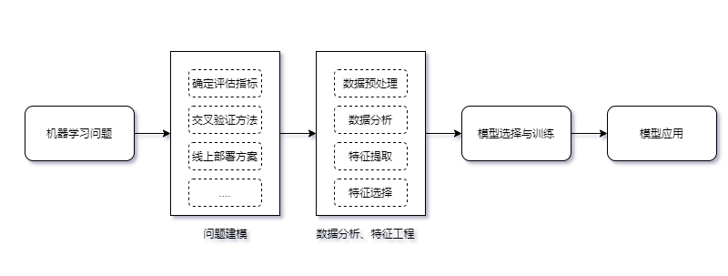

简述语义匹配的发展
最近在学习NLP的时候发现，语义匹配是一个相对有趣的子领域。表面上看是计算两个句子的相似度，但是在具体的场景中，可以完成排序、搜索等工程性很重的功能。这里梳理一下语义匹配的发展。后期有机会在深入这个领域。
注：更新一下表格内容。
语义匹配
语义匹配可以简单地表述为，输入两个句子A和B判断，判断它们之间的关系。这个关系包括相似性、蕴含等等。通常来说，判断两个句子的语义相似性是匹配中最常见的情况。语义匹配可以形式化为，
其中，$\psi$表示特征提取器，即复杂把问题转化为向量，$f$表示匹配模型和匹配度量，最后结果输出匹配关系，如相似程度。也就是说，语义匹配关键做两件事情：语义表示、相似度量。
这里把语义匹配任务可以分为四大类，并整理成表格，
| Tasks | Source Text | Target Text | 解释 |
|---|---|---|---|
| Ad-hoc Information Retrieval | query | document (title/content) | 根据查询项返回和其相关的文档，如常见的搜索引擎 |
| Community Question Answer | 问题 | 问题或答案 | 根据问题查找答案或根据问题查找已有的问题以服用答案 |
| Paraphrase Indentification | 短文本 | 短文本或短文本集合 | 判断两个句子是否有相同的语义 |
| Natural Language Inference | 前提 | 结论 | 语言推理任务，根据前提判断结论（假设）是否正确（蕴含）或错误（矛盾）或不确定（中性） |
在神经网络前，语义匹配已经发展处很丰富的内容，包括VSM、主题模型思路等等。
VSM与经典方法
向量中每个元素的计算使用 tf-idf 等方式，获得向量后，通过距离度量或相似性度量计算方式计算，常见有：
- 欧几里得距离
- 余弦相似度
- 海明距离
- Jaccard
- Levenshtein 编辑距离
- BM25
- SIF
- EMD
Jaccard 是字符方法，并没有利用文本的语义信息。VSM 解决表示的问题且足够简单，但是并语义问题并没有解决。随着词典增大，向量的维度增大，表示更稀疏。
代表性模型有 BM25
其中，
当然，比较方便的做法是词$q_i$的IDF值直接在idf词典中获取。
$\text{avgdl}$表示文本的平均常见，$b$和$k_1$是超参数，根据经验调节。$f(q_{i},D)$为句子Q中的词$q_i$与句子D的匹配度，这里使用词$q_i$在句子D中出现的频率来表示。
事实上，结合jieba分词，BM25的Python实现比上式清晰多了，
1 | def bm25_similar(text1, text2, s_avg=10, k1=2.0, b=0.75): |
注意到，这里的实现需要事先准备好idf词典。在实践中，需要注意idf词典与句子对集的match程度。
矩阵分解和主题模型
为解决 VSM 高维度、语义信息难刻画的问题，可以从数学入手。通过 VSM 获得的高维稀疏文档-词共现矩阵 $D_{档,单词}$，然后对词-文档共现矩阵进行矩阵分方法SVD，获得如下的形式
这样，表达文档的维度变小了，也有了潜在语义（主题）。获得文档-主题矩阵后，就可以计算文档之间的相似度，例如文档$D_i$与文档$D_j$，相似度计算，
$P_i$表示文档$D_i$在文档-主题矩阵$P$中的第$i$行，即文档的向量表示。
矩阵分解 LSA，减少文档表示的维度，得到的是潜语义，但是这种分解是基于数学的，无法理解文档的生成原理。
在矩阵分解的基础上引入概率解释，于是出现两类模型：
- 基于频率主义的方法，以 pLSA 为代表
- 基于贝叶斯主义的方法，以 LDA 为代表
这两种方法解决基于矩阵分解无法理解文档生成原理的问题。
这个分解更一般化。
机器学习方法
经典的思路是，作为二分类问题，
训练模型判断句子相似或不相似。另外的思路，
机器学习方法用于文本匹配的流程，

不过机器学习本身也有不少局限，机器学习的局限：
- 模型性能依赖人工特征，复杂任务设计特征费时费力。同时，特征的学习和分类器是解耦的，因此，人工提取特征需要反复尝试才知道是否有利于下游的分类器。
- 数据稀疏问题
- 无法处理OOV
- 选择性偏好：某些算法偏好于选择某类函数，归纳偏置
- 各个模块之间解耦，误差传播导致更大的误差某一个模块的输出导致下一模块造成误差无法反馈
机器学习中的分类器是浅层学习器，特征需要人类经验来获得，导致很多的机器学习问题变成了特征工程问题。这不禁让人问道，能否把特征提取自动化。答案就是深度神经玩两个。深度学习方法，是目前主流的相似、匹配方法，接下来继续深入。
深度学习
无论是one-hot编码还是CountVector，特征数为词汇表的大小，全局全连接网络直接导致参数过大而OOM，即便有足够的内存，稀疏的特征只会让网络收敛非常缓慢，因为每次只更新极少数的参数。特征之间存在语义鸿沟，无法发现更丰富的语义，如相似性。
局部表示的向量，可以通过神经网络“映射”到低维空间中，这个操作称为 Embedding。这里“映射”只是一个查表操作，后期我们再展开。
因此，这里表示学习可以理解为，从局部表示开始，借助 Embedding 以及多层神经网络结构学习到一个好的分布式表示。
文本匹配+深度学习的好处
端到端，直接将原始数据和标签作为网络的输入、输出，不需要考虑机器学习中提到的分词、去停用词、特征提取等方法。深度学习可以让“特征工程”和下游的分类器紧耦合，表现出端到端。
优势：
把词表示为稠密向量
自动的特征提取
端到端，各个模块之间紧耦合，训练和推断时模型作为整体运作。
通过误差逆向传播减少个模块的误差
深度学习时代，相似度量不一定人为设置，可以让网络学习出来，表现为表示 + 相似度量这样的架构。例如，通过RNN、CNN等工具获得句子的向量序列，然后使用某种度量方法比较这两个向量序列的差异。
语义匹配的基本思路，文本的表示（交互）、定义相似度、根据相似度优化目标。
基于表示
基于表示，
一般来说，特征提取$\Phi$对于两个句子来说是公用的，除非两个句子是不同语言。基于表示的好处是，特征可以提前计算获取。基于表示的方法的核心是如何获取更好的句向量（sentence Embedding）表示。
基于交互
在Attention提出来后，各种基于交互的匹配模型也相继提出，基于交互的模型可以如下表示，
其中$\Phi_{i}$是交互结构，基于交互的模型可以有多种不同的交互结构。这类交互本身是否按照人们设计的那样work就不得而知了，一方面是Attention本身的解释性也有待研究。各种花式交互的方法让人眼花缭乱，我个人还是遵循这样的原则，追求建模手段的泛化，简单适用的方法推广到更多的场景中，而不是在模型上泛化，在某些数据集上表现亮眼，而换个数据集就无力了。
交互本身消耗更大的计算资源，每次匹配都在交互上消耗大量计算资源，而交互本身是无法预先准备。在简单的场景下，我本人更青睐基于表示的方法。
混合表示与交互
把表示和交互混合在一起获得更复杂表示能力更强的模型是很直观的思路，
度量匹配性
使用常见的相似性度量或距离度量，如余弦相似度、欧几里得距离，以上相似方法本身是存在偏置，集模型默认是计算相似关系，但是我们并不一定是要计算相似，而是其他的匹配关系，如自然语言推理任务中，需要知道的是是否具有蕴含关系，等等。为此，结合Dense甚至更复杂的网络结构直接把匹配度量（关系）给学习下来。例如，$u,v$是学习到的句向量表示，那么匹配度量可以是，
输出$o$为匹配度（相似度）。使用类似Mahalanobis距离度量，
或者Tanimoto测度，
以上$o_{1},o_{2}$也可以使用这两者测度。发挥想象力去设计丰富但简洁的融合方式，并验证性能效果。
总结
以上简单梳理一下语义匹配从VSM、主题模型到机器学习和深度学习方法的思路。
转载请包括本文地址：https://allenwind.github.io/blog/8103
更多文章请参考：https://allenwind.github.io/blog/archives/